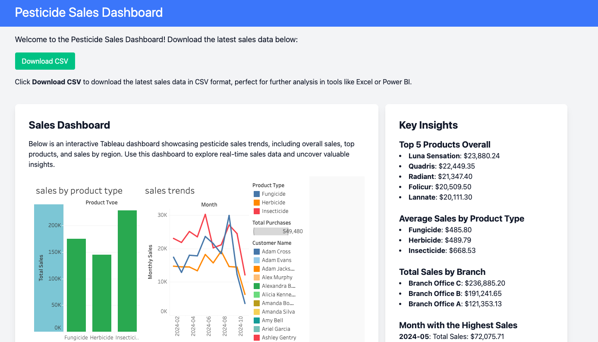
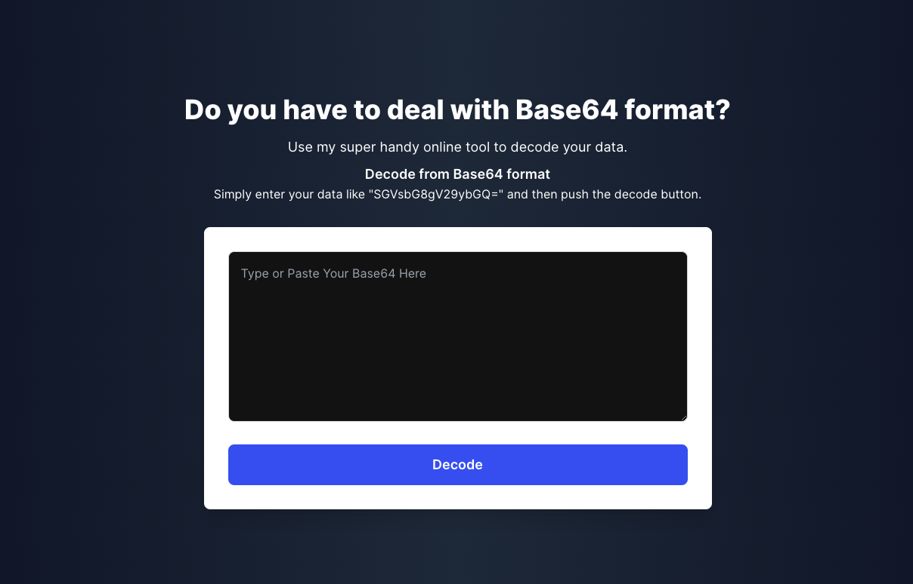
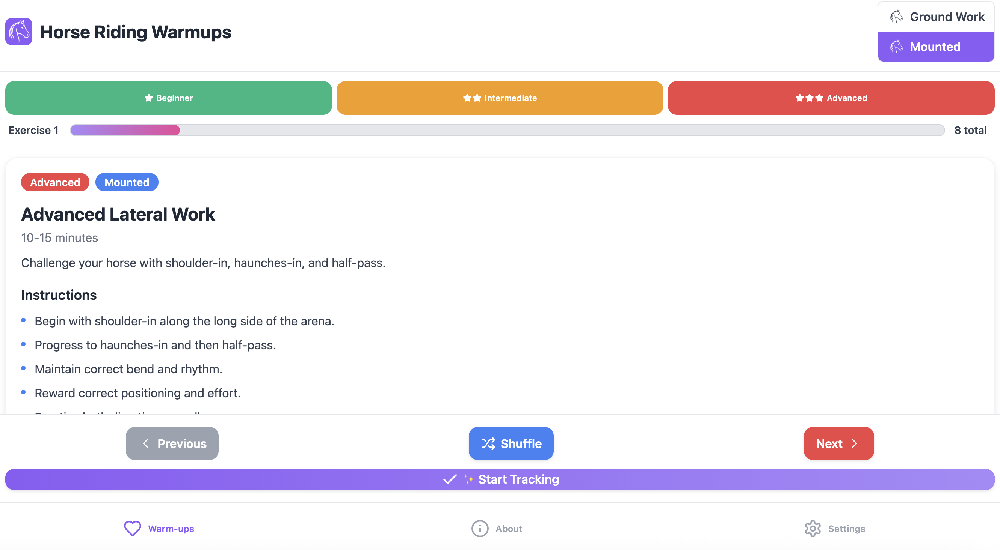

Hi, I'm Marcia Cripps
Ag Educator · Software Engineer · Podcast Guest
I'm an entomology and plant pathology professor at Michigan State University's IAT program. I bring crop science to life through education, technology, and storytelling—on your podcast, in the classroom, or through custom ag software solutions via my freelance business, Agfluence.
Areas of Expertise
Where agriculture, science, and technology meet
Entomology
Plant Pathology
Integrated Pest Management
Crop Science
Ag Education
Podcast Guest & Speaker
Software Engineering
Ag Data & Analytics
Software & Ag Tech
Building tools at the intersection of agriculture and technology

Pesticide Sales Dashboard
An agricultural analytics platform that processes and visualizes pesticide sales data, featuring interactive Tableau dashboards and a Python/Flask backend for data processing and API endpoints.
Agfluence
My freelance software business. I build websites, mobile apps, and digital tools for agricultural businesses—helping farms and ag companies establish and grow their online presence.

Base64 Decoder
A utility tool for encoding and decoding Base64 strings, built with Vue.js and TailwindCSS with a serverless backend on AWS Lambda and API Gateway.

Shopify HTML Enhancer
A tool for Shopify merchants that automatically enhances blog post formatting, improving readability and SEO through intelligent HTML processing.

HorseRidingWarmups.com
A comprehensive resource website for equestrians, featuring warmup exercises, training tips, and riding guidance.
Speaking & Podcasts
Bringing agriculture to the conversation
I love making crop science, entomology, and plant pathology accessible and engaging for any audience. Whether it's a deep dive into why potatoes were once toxic to humans or a conversation about the future of integrated pest management, I bring real-world field experience and a passion for storytelling to every episode.
Booking a podcast guest? I'm available for interviews on agriculture, crop science, entomology, plant pathology, ag tech, and the intersection of farming and software. Let's talk.
Recent Appearances
Farm Traveler Podcast
Ep. 246 — "Potatoes Were Once Toxic to Humans"
February 2026
Shark Farmer Podcast
Ep. 259 — "Marcia Cripps the Crop Queen"
The Rural Woman Podcast
"In the Field of Agronomy with Marcia Cripps"
Topics I Cover
- The science behind common crops (potatoes, corn, soybeans, and more)
- Integrated pest management in modern agriculture
- Entomology for non-scientists: making bugs fascinating
- Plant diseases and how they shape what we eat
- Women in agriculture and STEM education
- How technology and software are transforming farming
- From the field to the classroom: ag education in the digital age
About Me
Where the field meets the code
I'm an entomology and plant pathology professor at Michigan State University through the Institute of Agricultural Technology (IAT) program, where I teach the next generation of agricultural professionals about the science that protects our food supply. From insect identification and behavior to crop disease management, my classroom is as much in the field as it is on campus.
I'm also a software engineer and entrepreneur. Through my freelance business Agfluence, I build websites, mobile apps, and digital tools that serve the agricultural community. My background spans both worlds—I'm a licensed Pest Control Advisor, a crop consultant who has worked directly with potato growers and other producers, and a developer who builds data dashboards, web applications, and automation tools for ag businesses.
When I'm not teaching or coding, you can find me on agricultural podcasts sharing stories about the science behind the food on your plate, riding horses, or working on my next software project. I'm based in Southwest Michigan and always open to new conversations.
Here's what I bring to the table:
- Entomology & Plant Pathology instruction at MSU's IAT program
- Crop consulting & licensed Pest Control Advisor
- Full-stack software development (Python, Django, React)
- Agricultural data analysis & visualization
- Podcast guest & public speaker on ag topics
- Ag business consulting & digital strategy

Let's Connect
Podcast bookings, software consulting, or just a good conversation about crops
Podcast Bookings
Available for remote or in-person interviews on ag science, entomology, crop tech, and more.
Software Services via Agfluence
Custom web apps, data dashboards, and automation tools built for agriculture.
marciacripps@gmail.com
Southwest Michigan